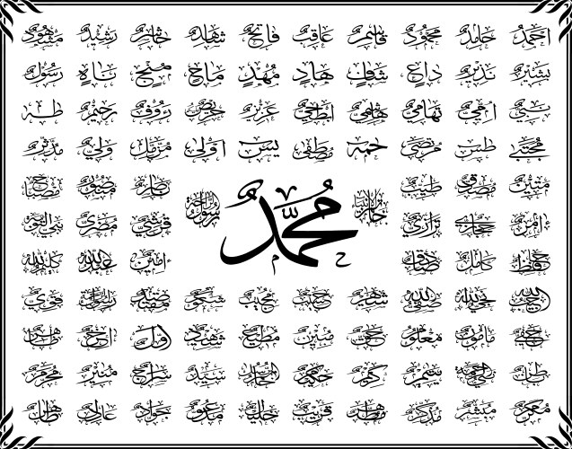

The life of Prophet Muhammad (PBUH) is a model for all of humanity. His Seerat (life history) encompasses every aspect of a perfect human life. Seerat E Nabwi guides us in spiritual, social, and moral contexts.
Khatam E Nabuwat affirms thatProphet Muhammad (PBUH) is the last of all Prophets, and there will be no prophet after him. This is a fundamental belief in Islam.
.jpeg)
مؤلّف
جسٹس مولانا محمد تقی عثمانی مدظلہم
سیرت طیبہ کے نام پر منعقد ہونے والی محفلوں میں عین محفل کے دوران ہم ایسے کام کرتے ہیں جو سرکار دو عالم محمد مصطفی ﷺ کے ارشادات کے قطعی خلاف ہیں اور عملاًہم ان تعلیمات کا، ان سنتوں، ان ہدایات کا مذاق اڑا رہے ہیں جو نبی کریم ﷺ لے کر آئے تھے۔
مؤلّف
حضرت ڈاکٹر محمد عبدا لحئی عارفیؒ
حدیث کی مستند کتابوں سے رسول اللہﷺکے شمائل و خصائل کو جمع کرکے انسانی زندگی کے ہر پہلو، ہر شعبہ اور ہر حال کے متعلق ہدایات پیش کی گئی ہیں جن سے اتّباعِ سُنّت اور اتّباعِ رسول ﷺ کا صحیح مفہوم متعین ہوجائے۔
مرتب و مترجم اردو
مولانا محمد اسلم قاسمی صاحب
زیر سرپرستی
مولانا قاری محمد طیب صاحب ؒ
سیرت النبی ﷺ کی نہایت مفصل و مستند تصنیف
Thank you for reaching out to us!